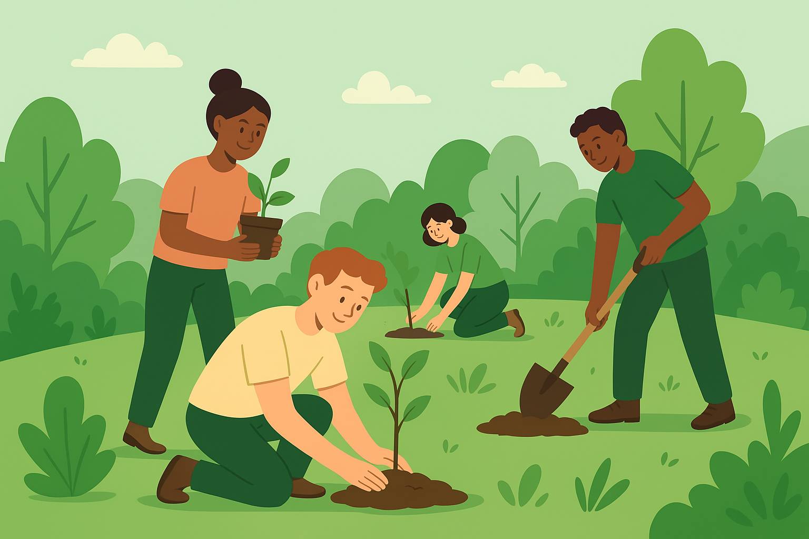

Reflorestamento com Voluntários e Parceiros

🌱 Reflorestamento
O projeto teve início em 2024 com o objetivo de restaurar áreas degradadas próximas a nascentes. Foram mapeados 10 hectares e firmadas parcerias com escolas locais e ONGs ambientais. Durante esta fase, mais de 5.000 mudas nativas foram plantadas com apoio de voluntários e comunidades locais. Oficinas de educação ambiental foram realizadas para conscientizar sobre a importância da biodiversidade. A conclusão está prevista para dezembro de 2025, com a meta de atingir 10.000 mudas plantadas e 80% de sobrevivência. Após isso, o foco será o monitoramento e manutenção das áreas reflorestadas.